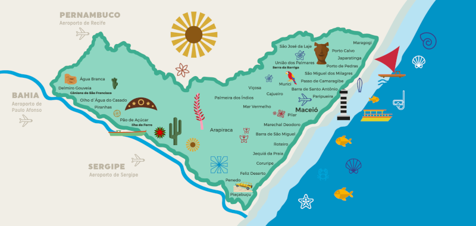
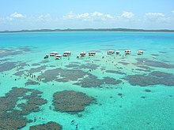

Alagoas te faz feliz
Com paisagens cheias de contrastes e cores, águas calmas e cristalinas e belezas naturais inconfundíveis, Alagoas sustenta, com charme e propriedade, o título de Estado com as praias mais bonitas do Nordeste do Brasil. Localizado em um dos pontos privilegiados da costa brasileira, Alagoas faz divisa com os estados de Pernambuco, Bahia e Sergipe.
O destino reúne uma diversidade de produtos e roteiros turísticos, tanto em seus 250 km de litoral como no interior, com praias paradisíacas, extensos coqueirais, corais, falésias, cânions, cachoeiras, trilhas e monumentos históricos - proporcionando aos visitantes uma experiência completa em turismo de lazer, aventura, cultural e gastronômico. Alagoas é um destino completo para ser feliz a dois, em família ou em uma viagem com os amigos.
Cenários como vilas de pescadores, fazendas com reservas e trilhas de mata atlântica, abundância de coqueirais, praias belíssimas de águas cristalinas, como as praias de São Bento, Peroba, Burgalhau, Barra Grande, além das galés formadas por recifes de corais a 6 km da costa, são algumas das riquezas naturais do município.
 MaragogiMaragogi tem um dos ecossistemas mais importantes do Brasil, a diversificada fauna e flora de espécies marinhas são locais ideais para mergulhos. Navegar pelos rios onde se encontra os preservados manguezais, praias, praticar esportes, tomar banhos de bicas, cachoeiras, todas essas cidades tem um contato com a natureza. Alagoas é conhecida por paraíso das águas justamente devido os ricos aquíferos no estado, bem como cachoeiras, rios, mar, lagoas. Algumas praias são geralmente comparadas às do Caribe.
- MARAGOGI
- JAPARATINGA
- MACEIÓ
- SÃO MIGUEL DOS MILAGRES
- PASSO DE CAMARAGIBE
- BARRA DE SANTO ANTONIO
- PARIPUEIRA
- PORTO DE PEDRAS
- PILAR
- MARECHAL DEODORO
- BARRA DE SÃO MIGUEL
- JEQUIÁ DA PRAIA
- PIRANHAS
- PALMEIRA DOS ÍNDIOS
PRAIAS:
E para quem gosta de cultura, história, arte e artesanato, Maceió é o lugar! A capital reúne diversas preciosidades, como o bairro histórico de Jaraguá; além do belo circuito em homenagem à literatura e a arte popular nordestina, com monumentos de escritores e obras de artesãos alagoanos. Há ainda os badalados e cobiçados centros de comercialização de artesanato, como a feirinha da Pajuçara e o imponente bairro do Pontal da Barra, que encanta com seus inúmeros varais repletos de bordados de filé coloridos.